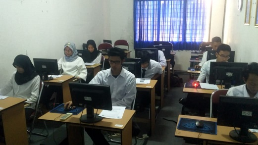

Laboratorium Komputer Teknik Informatika merupakan fasilitas penunjang kegiatan perkuliahan di lingkungan Fakultas Teknik, Universitas Suryakancana dalam melaksanakan matakuliah yang berpraktikum. Kegiatan praktikum merupakan kegiatan rutin yang diadakan setiap semester sebagai pendukung perkuliahan dan untuk meningkatkan kualitas mahasiswa Fakultas Teknik Universitas Suryakancana yang melek teknologi. Laboratorium Komputer Teknik terbagi menjadi tiga bagian, yaitu Laboratorium Dasar, Laboratorium Jaringan, dan Laboratorium Multimedia. Laboratorium tersebut dapat digunakan oleh semua Program Studi untuk mendukung kegiatan perkuliahan yang berhubungan dengan komputer.
Selain digunakan sebagai penunjang perkuliahan, Laboratorium Komputer Teknik juga difungsikan sebagai sarana pendukung penelitian dan pengabdian kepada masyarakat bagi dosen dan mahasiswa di lingkungan Fakultas Teknik, Universitas Suryakancana. Dengan begitu, diharapkan dosen menjadi terbantu dan mendapatkan dukungan dalam menjalankan Tri Dharma Perguruan Tinggi. Bagi mahasiswa, Laboratorium ini tidak hanya dapat digunakan sebagai sarana praktikum saja tapi juga sebagai sarana diskusi dalam menyelesaikan tugas matakuliah maupun penelitian Tugas Akhirnya.